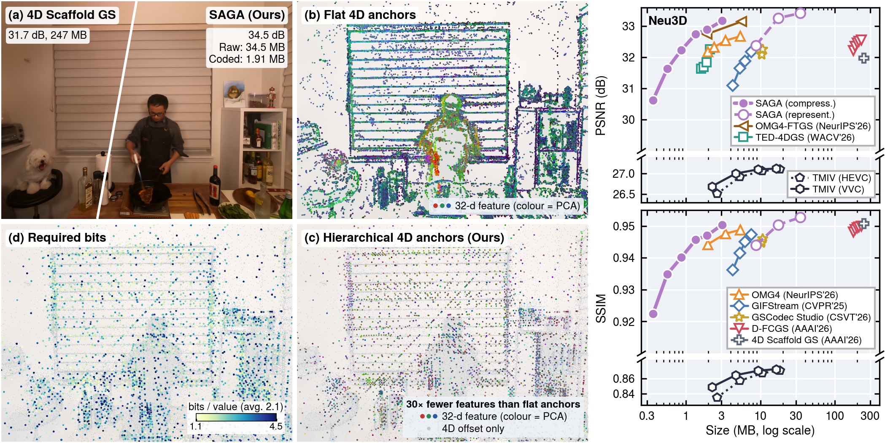
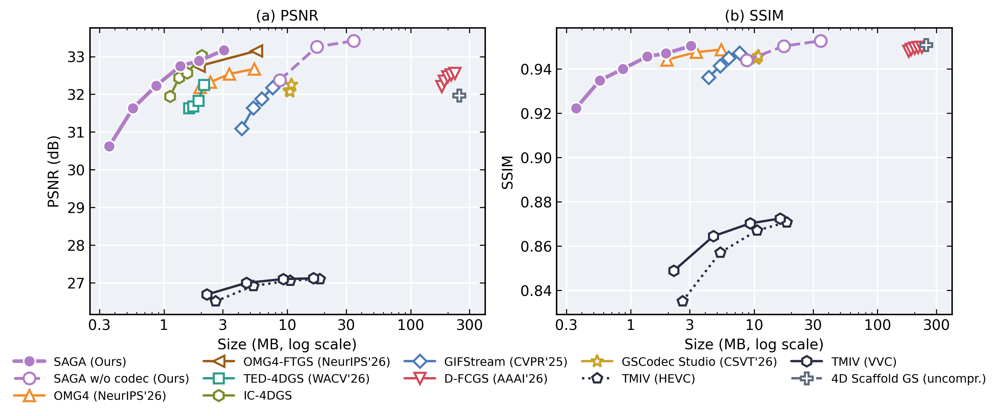
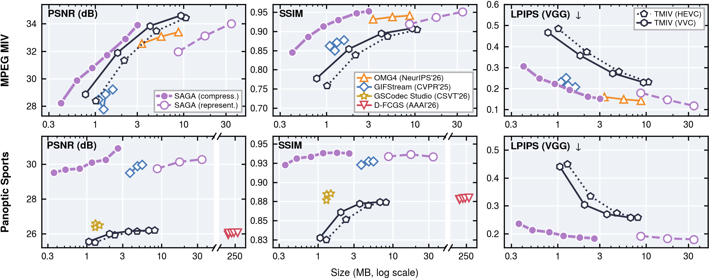

- SAGA organises a dynamic Gaussian scene as a hierarchy of sparse anchors placed directly in 4D space-time; fine anchors and Gaussians are decoded from interpolated features of their neighbours.
- A long-context entropy model with an orthogonally updated memory bank codes the anchors, compressing a 300-frame Neu3D sequence to about 2 MB.

Abstract
Immersive video communication requires photorealistic, compact dynamic scene representations that support efficient rendering. 3D Gaussian Splatting (3DGS) is a promising approach, but dynamic 3DGS remains difficult to compress due to its dense primitives and spatiotemporal redundancy. Anchor-based formulations improve compactness through sparse scaffolds that share geometry and appearance across primitives. However, existing designs typically deform a single canonical scaffold and condition each primitive solely on its associated anchor, limiting their ability to model non-local dynamics and disocclusions and exploit inter-anchor correlations. To address these limitations, we propose SAGA, a volumetric video codec built on Sparse Anchor-assisted GAussian splatting representations. SAGA represents a dynamic scene using hierarchical sparse anchors in 4D space-time. Coordinate-based INR decoders generate fine anchors and Gaussian primitives from features obtained through kernel interpolation among nearby anchors, enabling parameter sharing across spatiotemporal structures. A fixed-size memory with a novel orthogonality-informed slot-update strategy further captures long-range dependencies among unstructured anchors for entropy coding. Empirically, SAGA achieves PSNR-based BD-rate reductions of 90.88%, 64.30% and 65.14% relative to GIFStream, TED-4DGS, and OMG4, respectively, on the Neu3D testset.
Video Comparisons
All methods are rendered along the same camera paths. Labels give the size of the whole compressed sequence and its PSNR / SSIM on the test views.
Framework

- Anchors in space-time. A greedy dyadic 4D tree, built from short STG warm-ups, places coarse anchors where the scene needs them in space and time, without deforming a single canonical scaffold.
- Inter-anchor decoding. Fine anchors and Gaussians are decoded from features interpolated over their 4D neighbours, not from an isolated parent feature.
- Long-context entropy model. Coding groups are decoded in parallel; a fixed-size memory bank with orthogonalized writes carries context across groups at bounded cost.
Rate-Distortion Performance


| Codec | Neu3D | Panoptic Sports | MPEG MIV |
|---|---|---|---|
| TMIV-24.0 (HEVC) | – | – | −45.89% |
| TMIV-24.0 (VVenC) | – | – | −18.41% |
| 4DGC (CVPR'25) | −62.39% | – | −32.38% |
| GIFStream (CVPR'25) | −90.88% | −84.87% | −67.09% |
| TED-4DGS (WACV'26) | −64.30% | – | – |
| D-FCGS (AAAI'26) | −99.31% | – | – |
| OMG4 (NeurIPS'26) | −65.14% | – | – |
– : the rate ranges do not overlap enough for a reliable BD-rate.
BibTeX
@inproceedings{gao2026saga,
title = {Gaussian Splatting-based Volumetric Video Compression with Sparse {4D} Anchors},
author = {Gao, Ge and Teng, Siyue and Wang, Changqi and Zhang, Fan and Anantrasirichai, Nantheera and Chiang, Jui Chiu and Peng, Wen-Hsiao and Bull, David},
booktitle = {Advances in Neural Information Processing Systems (NeurIPS)},
year = {2026}
}Acknowledgments
This work was funded by the UKRI MyWorld Strength in Places Programme (SIPF00006/1) and the Royal Society International Exchanges programme (IEC\R3\253264). We thank the University of Bristol Advanced Computing Research Centre and Isambard-AI for providing computational resources. Isambard-AI is funded by the UK Government via UKRI and STFC [ST/AIRR/I-A-I/1023].